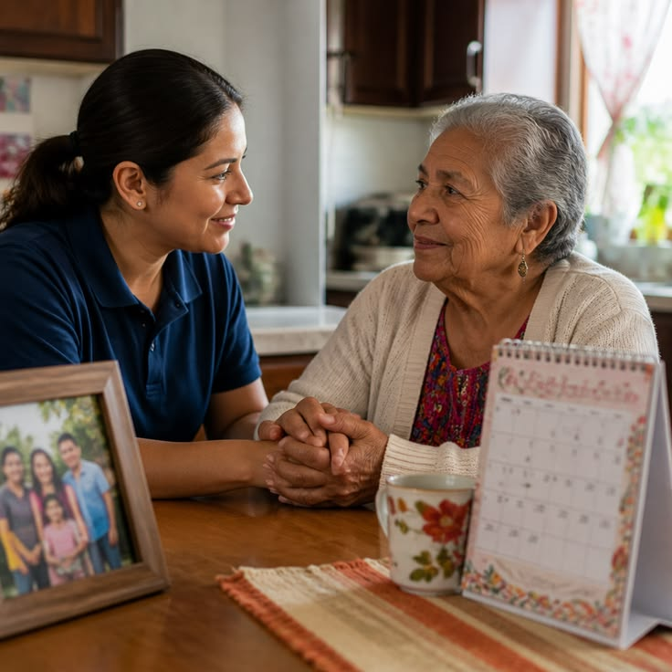

Listen first
Begin with the person’s concerns, goals and daily realities.
About Nabia
A useful care plan has to make sense in the person’s home, routines, relationships and goals—not only in the medical record.
Our mission
Nabia brings medical care beyond traditional settings and considers the practical context surrounding a person’s health.
The work combines clinical judgment with careful listening, clear explanations and coordination that can continue after the visit ends.
How care is shaped
Begin with the person’s concerns, goals and daily realities.
Connect recommendations to the routines and support available at home.
Include families, caregivers and other clinicians when appropriate.
Use follow-up to adjust the plan as health and circumstances change.

The home as context
Medication storage, stairs, transportation, meals and caregiver availability can all affect whether a plan is realistic.
Start a conversation